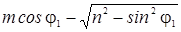
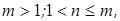
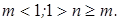
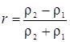
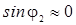
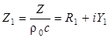

5.2 Отражение и преломление при наклонном падении
Рассмотрим
случай наклонного падения плоской звуковой волны на границу раздела двух сред.
Пусть угол падения равен φ1, угол отражения
Кроме того, должен выполняться закон
Снеллиуса:
или,
так как k
=
ω/c,
Этот
закон универсален для всех типов плоских волн, падающих на плоские однородные
препятствия. Физический смысл этого требования состоит в том, чтобы следы волн
на поверхности раздела двух сред не обгоняли друг друга.
Следствием
закона Снеллиуса являются законы отражения и преломления
звука:
Величина
n
называется относительным показателем преломления
звука.
Коэффициенты
отражения и прохождения звуковой волны (по давлению) при наклонном падении имеют
вид:
Проанализируем
полученное выражение. При нормальном падении (φ1 = 0) это
выражение совпадает с формулой, полученной в предыдущем разделе. При скользящем
падении (φ1→ 900) коэффициент отражения r → -1.
При =
0
имеет место полное
прохождение
звуковой волны через границу (r = 0).
Угол падения, при котором коэффициент отражения обращается в нуль, называется углом Брюстера:
Для
того, чтобы угол Брюстера был действительным, необходимо, чтобы выполнялось
условие:
что,
в свою очередь, реализуется либо при  либо при 
Если
скорость звука в первой и второй среде одинакова (n
=
1), то коэффициент отражения не зависит от угла падения:
.
Если
скорость звука во второй среде гораздо меньше, чем в первой (c2 <<
c1),
то  и, следовательно, φ2 ≈ 0. Это
означает, что независимо от угла падения звуковой волны на границу раздела, во
второй среде волны распространяются только в направлении нормали к границе.
Такой случай реализуется, например, при падении звуковой волны из воздуха на
поверхность пористого звукопоглощающего материала. В этом случае коэффициент
отражения при наклонном падении равен:
где
R
= ρ2с2
– волновое сопротивление материала, R1
= R/ρ0c
- волновое сопротивление, выраженное в долях волнового сопротивления воздуха,
или безразмерное волновое сопротивление (импеданс)
материала.
Если импеданс границы, на которую падает звуковая волна из воздуха, комплексный:
,
коэффициент
отражения также является комплексным числом:
Коэффициент
звукопоглощения при наклонном падении:
Кривая
а соответствует R1 → 1,
Y1 → 0,
кривая б – другим значениям импеданса
поверхности.